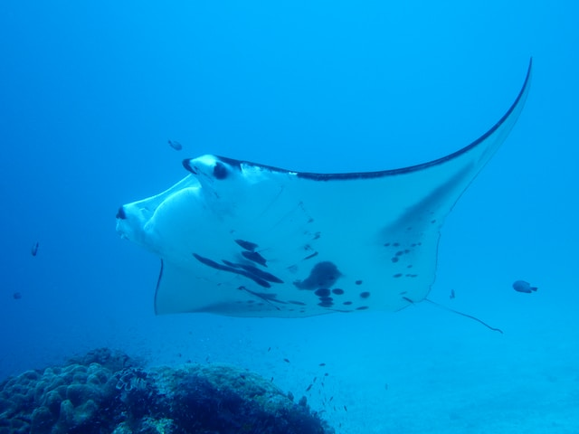

Berwisata di Raja Ampat menjadi impian bagi banyak orang. Selain
menikmati keindahan alamnya, wisatawan juga dapat melakukan aktivitas
lainnya seperti menyelam, berkeliling menggunakan kapal, maupun sekedar
bersantai dan berfoto.
Menjelajahi keindahan Alam Sang Raja
Berbicara mengenai Raja Ampat tidak dapat lepas dari salah satu ikon
dari tempat ini, yakni Wayag. Wayag merupakan jejeran batu karang yang
berbalut warna kehijauan yang menyebar di birunya lautan. Panorama
yang luar biasa inilah yang menjadikan wisata Raja Ampat mendunia.
Berfoto dengan latar belakang gugusan batu karang tentu menjadi hal
yang wajib dilakukan.
Selain Wayag, panorama gugusan batu karang yang hijau juga dapat
dinikmati di Pianemo. Tempat ini berada di ketinggian sehingga
wisatawan dapat menikmati perpaduan luar biasa dari gugusan batu
karang, birunya laut, dan langit biru cerah. Pianemo ini sering
disebut sebagai Wayag versi mini.
Berbagai keindahan alam Raja Ampat membuktikan kalau tempat ini bukan
hanya soal laut saja. Masih ada air terjun maupun habitat asli
Cendrawasih yang dapat menjadi alternatif bagi wisatawan. Hal ini
menunjukkan bahwa Raja Ampat memiliki wisata alam yang sangat lengkap.
Menikmati Panorama Bawah Laut Raja Ampat

Raja Ampat menyimpan keindahan bawah laut yang memikat. Setidaknya
terdapat sekitar 1500 spesies ikan, 500an spesies koral, dan lebih
dari 600 hewan tak bertulang belakang di bawah laut di seluruh wilayah
Raja Ampat. Hal ini terbilang wajar mengingat 75% spesies ikan di
dunia dapat ditemukan di Raja Ampat. Ini termasuk ikan pari manta yang
lebar tubuhnya dapat mencapai 2 meter.
Aktivitas menyelam pun menjadi pilihan utama untuk menikmati keindahan
bawah laut Raja Ampat. Wisatawan dapat melihat sendiri bagaimana
indahnya bawah laut raja ampat, atau bila beruntung, bisa berenang
bersama ikan pari manta yang ikonik itu. Berbagai spot wisata menyelam
telah tersedia di Raja Ampat sehingga wisatawan tidak perlu risau.
Wisatawan dapat berkunjung ke Pulau Misool. Pulau ini merupakan salah
satu dari empat pulau besar yang berada di Raja Ampat. Pulau Misool
sendiri terdiri atas empat bagian, yakni Misool Barat, Misool Utara,
Misool Timur, dan Misool Selatan.
Sumber artikel